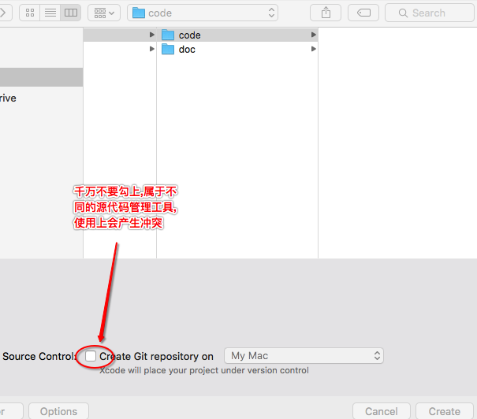
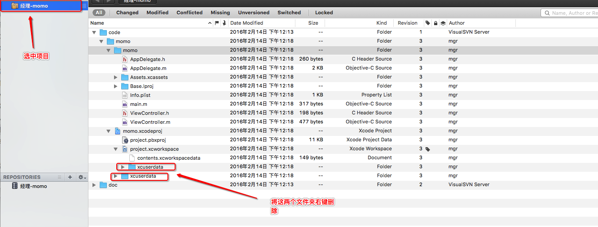
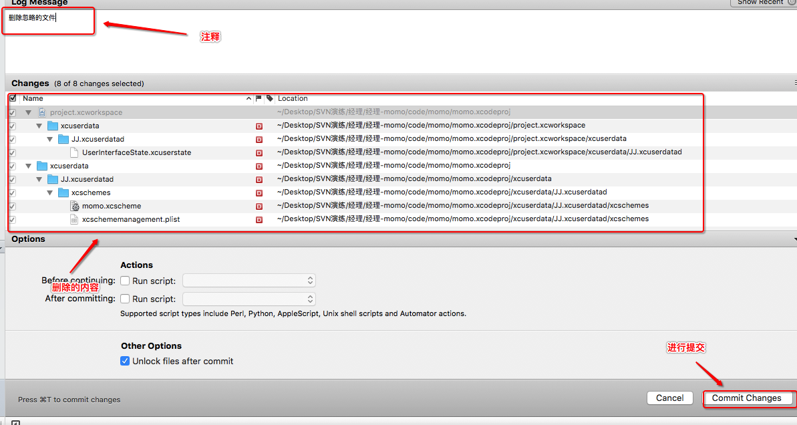
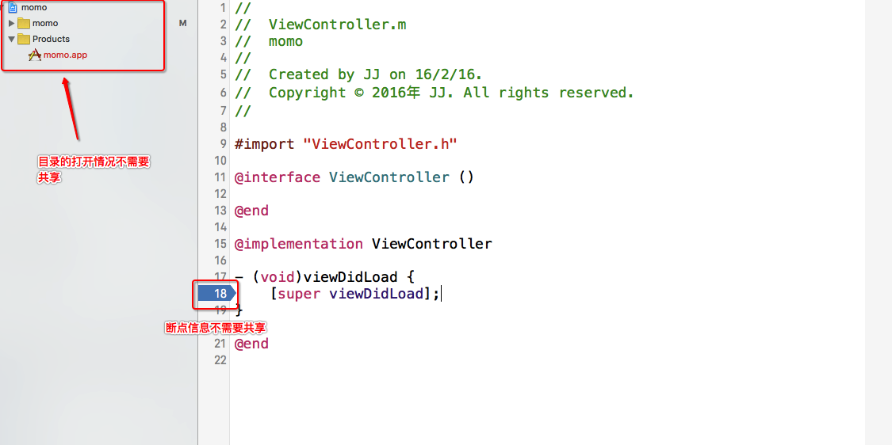
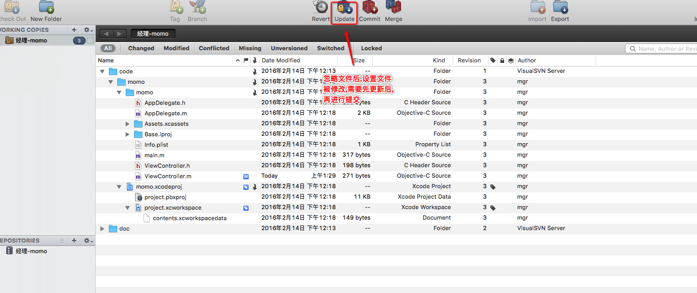
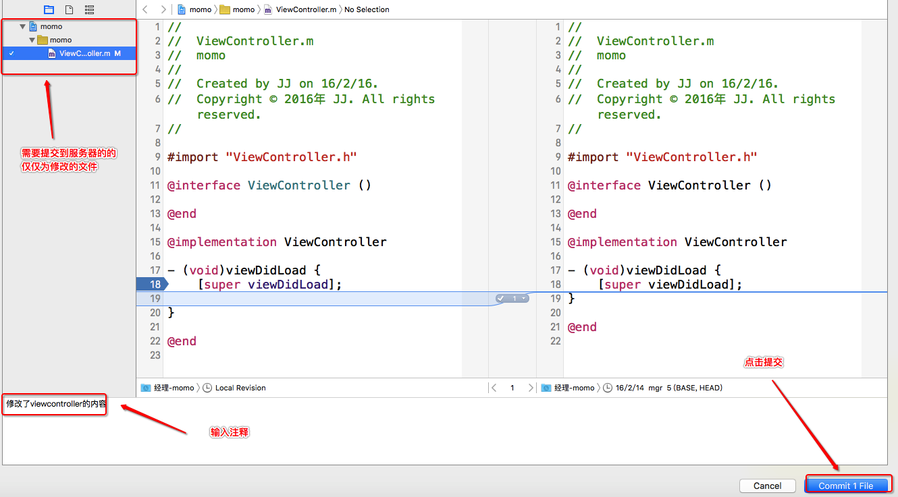

六.项目经理初始化项目1.现将服务器内所有的内容下载到本地(命令行通过checkout命令,而图形化界面工具则通过点击checkout按钮则可执行下载)

2.使用xcode创建momo项目到code文件夹中,git选项一定别勾
3.查看xcode中所有文件状态

4.将初始化的项目提交到服务器
1.xcode提交:xcode对SVN的集成越来越好,但是第一次初始化项目需要忽略一些文件操作,而xcode无法进行忽略
2.终端提交:终端执行操作繁琐不推荐
3.使用图形化界面进行提交可以执行忽略操作,选中项目点击commit进行提交

4.来到提交界面,输入注释点击commit changes进行提交

5.删除需要忽略的文件(虽然cornerstone忽略一些文件,但是并没有忽略完全)
1.在项目中找到xcuserdata(xcode用户信息)右键删除,一般有2个这样的文件夹
 2.删除后的状态为D

3.选中项目点击commit提交删除操作到服务器
6.ignore需要忽略的文件
1.删除操作虽然执行了,但是没有忽略掉,仅仅是移除了svn的管理之下,还是会显示出来
2.修改xcode内容来生成xcuserdata
 3.之前xcuserdata被删除后,再生成就不在svn的管理之下了,右键ignore忽略

4.忽略操作执行后,设置文件被更改,与服务器不一致,需要先点击update进行更新；服务器看的见得文件并没有这两个需要隐藏的文件，服务器端一直没被修改，很奇怪为什么要先更新？？？
 5.点击commit将忽略操作提交到服务器

7.检测忽略文件工作是否完成
在viewcontroller修改些内容,点击source control -> commit提交当看到提交的时候仅仅是修改的文件,那么忽略文件就已经全部忽略完成了

七.总结1.需要忽略的文件
1.xcode默认有个功能,会记录上次正在编辑的界面(比如在appdelegate界面,这个时候xcode关闭再打开,还会停留在该界面)
2.xcode会记录左侧目录的打开情况,下次再打开时还是这样的打开情况
3.xcode会记录断点信息,下次打开时还有着之前的断点
4.以上都会产生相应的文件在xcuserdata文件夹下
2.忽略文件的步骤
1.先右键删除,然后上传删除操作到服务器,目的是不让svn再去管理该文件
2.xcode中做些操作重新来生成xcuserdata,这个时候状态为?
3.右键ignore忽略来忽略该文件夹,设置信息发生变化,需要先进行update操作
4.将忽略操作提交到服务器
3.从服务器checkout代码到本地svn版本号要选则1.7